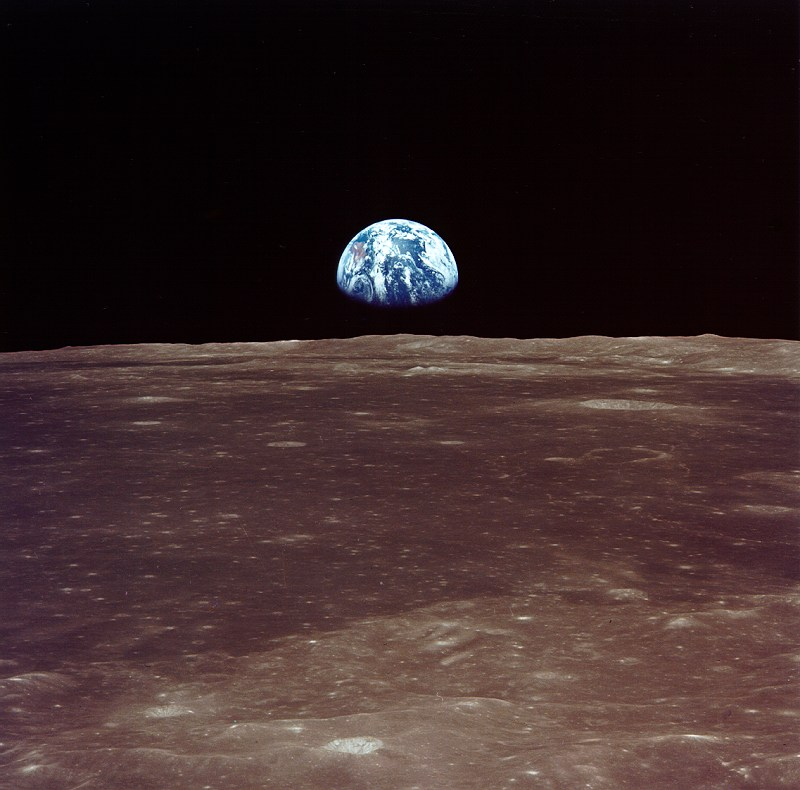
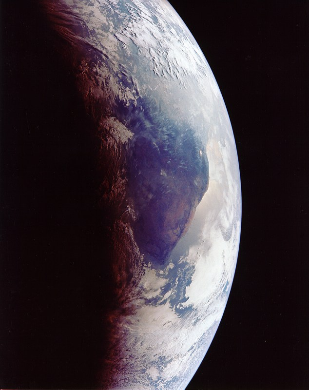

Armstrong:
"That is one small step for man,
and one giant leap for mankind."
"It's a great honor and privilege
for us to be here representing
not only the United States but
men of peace of all nations,
and with interests and the
curiosity and with the vision
for the future."
On July 20, 1969 the greatest feat of exploration ever attempted was accomplished.
Earlier President John F. Kennedy had set a goal for the country:
To reach the moon before the Soviets did, and before the end of 60’s.
We had successfully put men on the moon, and got them back.
The intent of the lunar landing was mainly political.
By 1957 (more than 10 years before we landed on the moon!), the Soviets had already put out their Sputnik satellite system.
Once the U.S. had landed men on the moon, the Soviets were behind in the space race.
Also, getting to the moon was a huge technological breakthrough. Thanks to that, we have many things today that come from our space ventures, like
Here Apollo 11 is taking off from Florida.
A picture taken by a crewmember of Apollo 11 mission, while on the moon.
A close up image of Earth, from space (taken by the crew of Apollo 11).